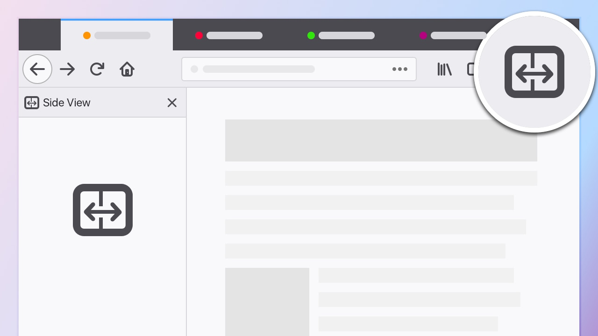
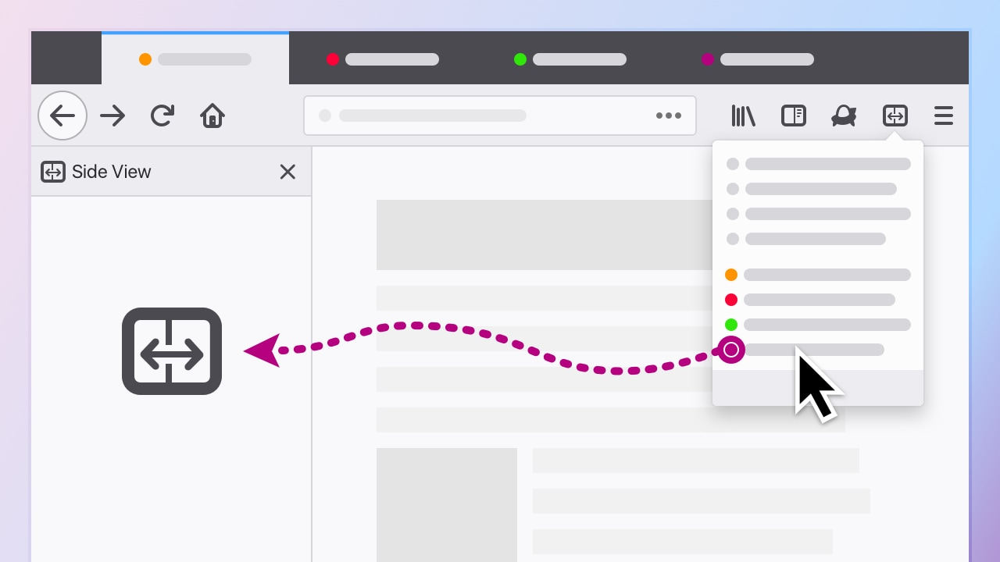
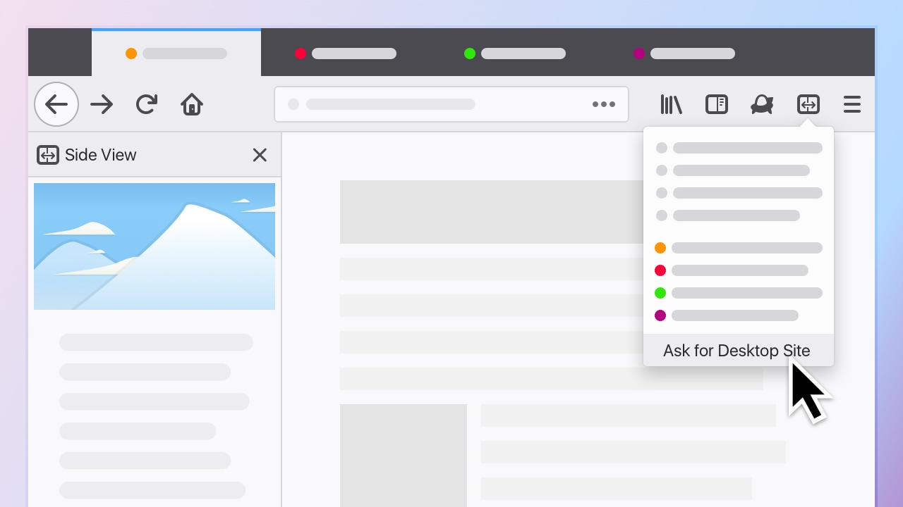
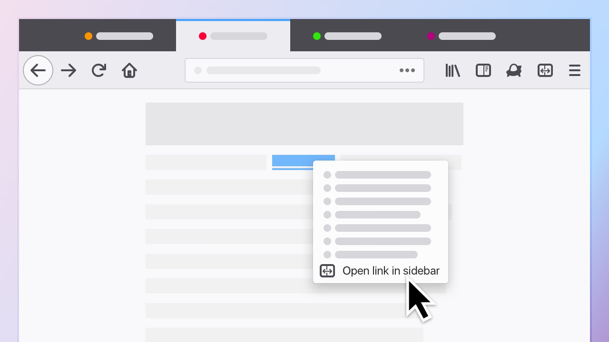

<!DOCTYPE html>
<html>
<head>
<meta charset="UTF-8">
<title>Side View - iodide</title>
<link rel="stylesheet" type="text/css" href="./resources/iodide.stable.css">
</head>
<body>
<script id="jsmd" type="text/jsmd">
%% meta
{
  "title": "Side View",
  "viewMode": "presentation",
  "languages": {
    "js": {
      "pluginType": "language",
      "languageId": "js",
      "displayName": "Javascript",
      "codeMirrorMode": "javascript",
      "module": "window",
      "evaluator": "eval",
      "keybinding": "j",
      "url": ""
    },
    "py": {
      "languageId": "py",
      "displayName": "python",
      "codeMirrorMode": "python",
      "keybinding": "p",
      "url": "https://iodide-project.github.io/pyodide-demo/pyodide.js",
      "module": "pyodide",
      "evaluator": "runPython",
      "pluginType": "language"
    }
  }
}

%% plugin
{
  "languageId": "py",
  "displayName": "python",
  "codeMirrorMode": "python",
  "keybinding": "p",
  "url": "https://iodide-project.github.io/pyodide-demo/pyodide.js",
  "module": "pyodide",
  "evaluator": "runPython",
  "pluginType": "language"
}

%% js
pyodide.loadPackage('numpy')
pyodide.loadPackage('matplotlib')
pyodide.loadPackage('pandas')

%% code {"language":"py"}
import numpy as np
import matplotlib.pyplot as plt
import pandas as pd
import pyodide
import json
from js import document


%% md
# Side View Report
Author: Teon L Brooks <<teon@mozilla.com>>
<br>
Date: January 18, 2019

### Supporting Assets
 - [Bug report](https://bugzilla.mozilla.org/show_bug.cgi?id=1479822)
 - [Side View PHD](https://docs.google.com/document/d/1KDJPrWmSclap7HSqjDoN9cGud4WzB9i8wxlguYPpGkg/edit)
 - [TxP Side View Study Data Aggregation](https://dbc-caf9527b-e073.cloud.databricks.com/#notebook/53830/)

%% md
## Motivation
Side View is a WebExtension, created by our Test Pilot team, that gives users the ability to open an additional website in the sidebar.
<br>
<div align='center'>
  
  
  
  
</div>

The goal of the Side View experiment is to evaluate whether its usage lead to more browser engagement.
The premise is that increased browser engagement may have long term effects of greater retention of the users, which is key for product sustainability.
For this study, we operationalized browser engagement as the number of URIs opened by a user.

%% md
## Methods
There are two key metrics were evaluating from the study: `uri_to_sv`, `total_uri_count`

1% of the English-US release population were randomly sampled. The participants were randomly assigned to either the control branch where they received a dummy add-on with no Side View functionality
or the experimental branch with the Side View functionality. Those on the experimental branch did not have any cueing to the new functionality,
that is, the feature discovery was completely organic. In addition, the onboarding tutorial was completely elective for those who found the Side View feature.

An `init` message was sent daily to confirm whether a user was on the control branch or the experimental branch.
3676 users (0.2%) were removed from the study due to branch hopping (users being on both the control and experimental branch during some point in the study).

Over the course of the study, we had 895,658 users on the control branch and 893,476 users on the experimental branch.

```
>> data_client_agg.groupby('branch').agg(fun.countDistinct('client_id')).collect()

[Row(branch=u'feature-active', count(DISTINCT client_id)=893476),
 Row(branch=u'control', count(DISTINCT client_id)=895658)]
```

### Terminology
For this study, we used the following terms for our analysis:

- Panel used (`panel_used`): describes whether a participant used the sidebar at least once that day.
- Side View URI (`uri_to_sv`): describes the number of URIs opened in the Side View panel during the study period.
- Total URI (`total_uri`): describes the number of URIs opened in the browser during the study period.
- Onboarding (`onboarding_shown`): describes whether the participant saw the onboarding walkthrough.

%% code {"language":"py"}
# Load all the intermediary data

# Loads key metrics, bootstrapped per branch
# dict_keys(['total_count_onboarding_shown', 'avg_daily_total_uri_count', 'total_count_panel_used', 'avg_daily_total_uri_to_sv'])
URL = './data/side_view-metrics_bootstrap-2019-01-18.json'
metrics_bootstrap = json.load(pyodide.open_url(URL))
metrics_bootstrap = {key: np.array(val) for key, val in metrics_bootstrap.items()}

# Loads onboarding bootstrapped per branch
# dict_keys(['total_uri_to_sv', 'avg_daily_total_uri_to_sv'])
URL = 'data/side_view-onboarding_bootstrap-2019-01-18.json'
onboarding_bootstrap = json.load(pyodide.open_url(URL))
onboarding_bootstrap = {key: np.array(val) for key, val in onboarding_bootstrap.items()}

# Loads sv user metrics
URL = 'data/side_view-df_sv_users-2019-01-18.csv'
df_sv_users = pd.read_csv(pyodide.open_url(URL), parse_dates=['date'])

%% md
### Question 1
**Q:** Does using the Side View Sidebar lead to an increase in overall URI count compared to the control group?

%% md
**A:** The telemetry shows that there was a difference in average daily URI count of <span id='ci_uri_diff'></span>.
The average daily URI in our control branch is <span id="ci_uri_control"></span>.
The average daily URI in our experimental branch is <span id="ci_uri_exp"></span>.


%% code {"language":"py"}
metric = metrics_bootstrap['avg_daily_total_uri_count']
metric_diff = np.abs(metric[0,:] - metric[1,:])
metric_mean = metric_diff.mean()
metric_sd = metric_diff.std()
ci = (metric_mean - 2*metric_sd, metric_mean + 2*metric_sd)
ci_uri_diff = '{:.2f}, 95% CI [{:.2f}, {:.2f}]'.format(metric_mean, ci[0], ci[1])
document.getElementById('ci_uri_diff').textContent = ci_uri_diff

metric_mean = metric[0,:].mean()
metric_sd = metric[0,:].std()
ci = (metric_mean - 2*metric_sd, metric_mean + 2*metric_sd)
ci_uri_control = '{:.2f}, 95% CI [{:.2f}, {:.2f}]'.format(metric_mean, ci[0], ci[1])
document.getElementById('ci_uri_control').textContent = ci_uri_control

metric_mean = metric[1,:].mean()
metric_sd = metric[1,:].std()
ci = (metric_mean - 2*metric_sd, metric_mean + 2*metric_sd)
ci_uri_exp = '{:.2f}, 95% CI [{:.2f}, {:.2f}]'.format(metric_mean, ci[0], ci[1])
document.getElementById('ci_uri_exp').textContent = ci_uri_exp

plt.figure()
plt.hist(metric[0,:], bins=100, alpha=0.5, label='control')
plt.hist(metric[1,:], bins=100, alpha=0.5, label='exp')
plt.legend(loc='upper right')
plt.title('Histogram of Bootstrapped User Averages of Daily Total URI count')
plt.ylabel('Number of Users')
plt.xlabel('URI Count')
plt.show()

%% md
### Question 2
**Q:** Does onboarding lead to greater usage of the Side View Sidebar?

%% md
**A:** The telemetry shows that there was a difference in the average daily count of URI sent to SV of <span id='ci_sv_daily_diff'></span>.
The average daily URI for those who did not go through onboarding is <span id="ci_sv_daily_control"></span>.
The average daily URI for those who were onboarded is <span id="ci_sv_daily_exp"></span>.

%% code {"language":"py"}
metric = onboarding_bootstrap['avg_daily_total_uri_to_sv']
metric_diff = np.abs(metric[0,:] - metric[1,:])
metric_mean = metric_diff.mean()
metric_sd = metric_diff.std()
ci = (metric_mean - 2*metric_sd, metric_mean + 2*metric_sd)
ci_sv_daily_diff = '{:.2f}, 95% CI [{:.2f}, {:.2f}]'.format(metric_mean, ci[0], ci[1])
document.getElementById('ci_sv_daily_diff').textContent = ci_sv_daily_diff

metric_mean = metric[0,:].mean()
metric_sd = metric[0,:].std()
ci = (metric_mean - 2*metric_sd, metric_mean + 2*metric_sd)
ci_sv_daily_control = '{:.2f}, 95% CI [{:.2f}, {:.2f}]'.format(metric_mean, ci[0], ci[1])
document.getElementById('ci_sv_daily_control').textContent = ci_sv_daily_control

metric_mean = metric[1,:].mean()
metric_sd = metric[1,:].std()
ci = (metric_mean - 2*metric_sd, metric_mean + 2*metric_sd)
ci_sv_daily_exp = '{:.2f}, 95% CI [{:.2f}, {:.2f}]'.format(metric_mean, ci[0], ci[1])
document.getElementById('ci_sv_daily_exp').textContent = ci_sv_daily_exp

plt.figure()
plt.hist(metric[0,:], bins=100, alpha=0.5, label='not onboarded')
plt.hist(metric[1,:], bins=100, alpha=0.5, label='onboarded')
plt.legend(loc='upper right')
plt.title('Histogram of Bootstrapped User Daily Averages of URIs sent to SV')
plt.ylabel('Number of Users')
plt.xlabel('URI Count')
plt.show()

%% md
**A:** The telemetry shows that there was a difference in the total count of URI to SV during the study of <span id='ci_sv_total_diff'></span>.
The average daily URI for those who did not go through onboarding is <span id="ci_sv_total_control"></span>.
The average daily URI for those who were onboarded is <span id="ci_sv_total_exp"></span>.

%% code {"language":"py"}
metric = onboarding_bootstrap['total_uri_to_sv']
metric_diff = np.abs(metric[0,:] - metric[1,:])
metric_mean = metric_diff.mean()
metric_sd = metric_diff.std()
ci = (metric_mean - 2*metric_sd, metric_mean + 2*metric_sd)
ci_sv_total_diff = '{:.2f}, 95% CI [{:.2f}, {:.2f}]'.format(metric_mean, ci[0], ci[1])
document.getElementById('ci_sv_total_diff').textContent = ci_sv_total_diff

metric_mean = metric[0,:].mean()
metric_sd = metric[0,:].std()
ci = (metric_mean - 2*metric_sd, metric_mean + 2*metric_sd)
ci_sv_total_control = '{:.2f}, 95% CI [{:.2f}, {:.2f}]'.format(metric_mean, ci[0], ci[1])
document.getElementById('ci_sv_total_control').textContent = ci_sv_total_control

metric_mean = metric[1,:].mean()
metric_sd = metric[1,:].std()
ci = (metric_mean - 2*metric_sd, metric_mean + 2*metric_sd)
ci_sv_total_exp = '{:.2f}, 95% CI [{:.2f}, {:.2f}]'.format(metric_mean, ci[0], ci[1])
document.getElementById('ci_sv_total_exp').textContent = ci_sv_total_exp

plt.figure()
plt.hist(metric[0,:], bins=100, alpha=0.5, label='not onboarded')
plt.hist(metric[1,:], bins=100, alpha=0.5, label='onboarded')
plt.legend(loc='upper right')
plt.title('Histogram of Bootstrapped User Total URIs sent to SV')
plt.ylabel('Number of Users')
plt.xlabel('URI Count')
plt.show()
%% md
### Question 3
**Q:** What is the average number of URIs sent to Side View?

%% md
**A:** The telemetry shows that the average URIs to SV during the study was <span id="sv_uri_mean"></span>.
The average number of daily SV users during the study was <span id="sv_user_mean"></span>.


%% code {"language":"py"}
metric_mean = df_sv_users['avg_total_uri_to_sv'].mean()
metric_se = df_sv_users['avg_total_uri_to_sv'].std() / np.sqrt(len(df_sv_users))
sv_uri_mean = '{:.2f}, ({:.2f} SEM)'.format(metric_mean, metric_se)
document.getElementById('sv_uri_mean').textContent = sv_uri_mean

metric_mean = df_sv_users['n_clients'].mean()
metric_se = df_sv_users['n_clients'].std() / np.sqrt(len(df_sv_users))
sv_user_mean = '{:.2f}, ({:.2f} SEM)'.format(metric_mean, metric_se)
document.getElementById('sv_user_mean').textContent = sv_user_mean

%% code {"language":"py"}
plt.figure()
df_sv_users.plot(y='avg_total_uri_to_sv', x='date', color='g', label='SV URI count')
plt.title('Plot of User Averages of URIs sent to SV over the Study')
plt.ylabel('Number of URIs to SV')
plt.xlabel('Date')
plt.legend(loc='upper right')
plt.tight_layout()
plt.show()

%% code {"language":"py"}
fig, ax1 = plt.subplots()
plt.title('Plot of Count and Proportion of Daily SV Users')
df_sv_users.plot(y='n_clients', x='date', color='b', linestyle='--', ax=ax1, legend=None)
ax1.set_ylabel('Number of Users', color='b')
plt.xlabel('Date')

ax2 = ax1.twinx()
n_clients_exp = 893476
df_sv_users['prop_clients'] = df_sv_users['n_clients'] / n_clients_exp
df_sv_users.plot(y='prop_clients', x='date', color='r', linestyle=':', ax=ax2, legend=None)
ax2.set_ylabel('Percentage of Users', color='r')
vals = ax2.get_yticks()
ax2.set_yticklabels(['{:,.2%}'.format(x) for x in vals])
ax2.tick_params(axis='y', labelcolor='r')
plt.tight_layout()
plt.show()

%% md
## Discussion
The study found that there was a marginally weak but not a relaible increase (2.91, 95% CI [-0.10, 5.93]) in the overall number of URIs
for those given the side view addon compared to those not given the addon. That is, this study cannot confidently attribute any
increases in overall URI counts to the introduction of the Side View addon.

Users tended to spend 1-2 URIs to the sidebar, which suggest it is being casually used for a few tasks.
On the average, only less than 1% of users given the extension used it daily.

</script>
<div id='page'></div>
<script src="./resources/iodide.stable.js"></script>
</body>
</html>
